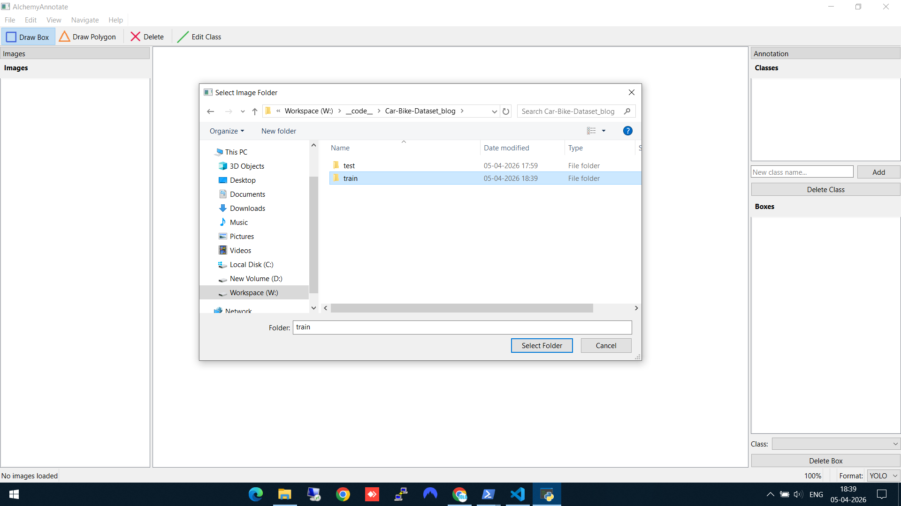
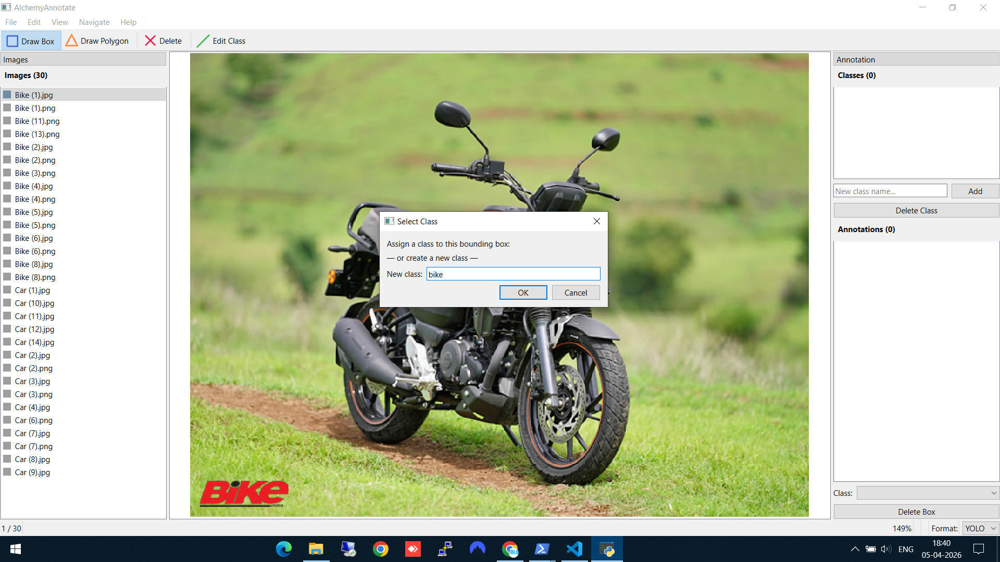
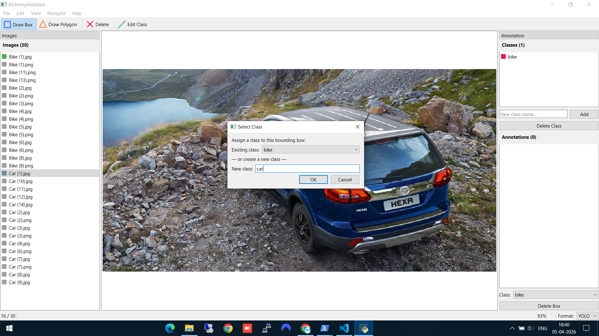
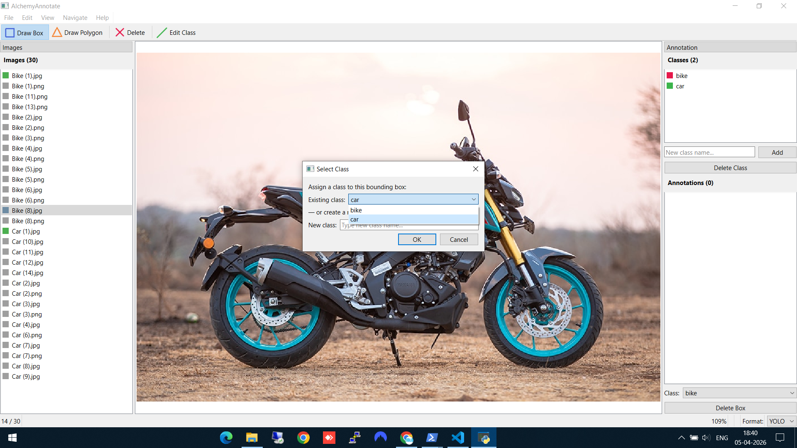
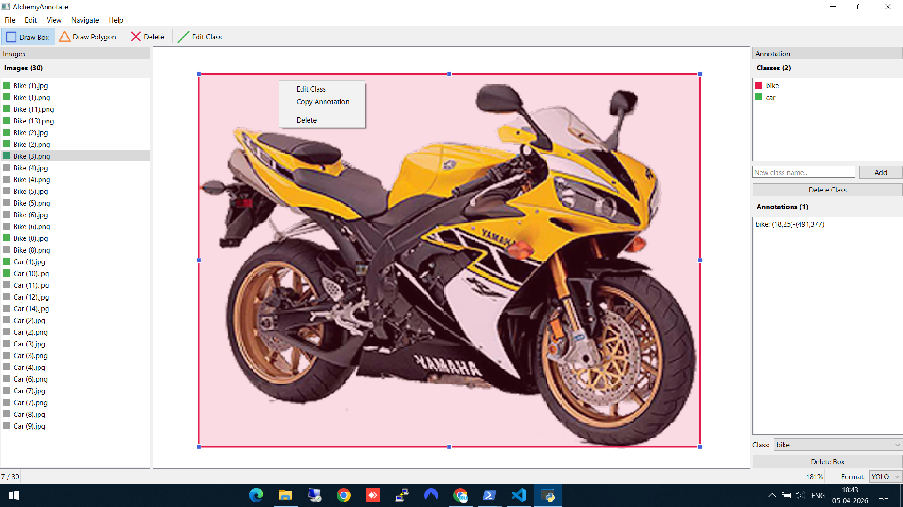
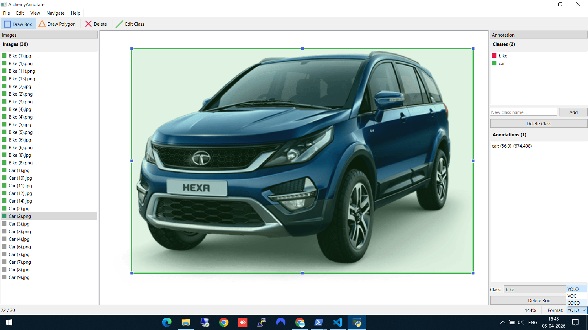

The Problem
If you train object detection models, you need labeled data. And labeling data means drawing bounding boxes on hundreds (or thousands) of images. The existing tools fell into two camps:
- Web-based tools (Label Studio, CVAT) — powerful but heavy. Overkill for a quick local annotation session.
- Simple scripts — fast but limited. No format conversion, no session persistence, poor UX.
I wanted something in between: a lightweight desktop app that opens instantly, lets me annotate images with bounding boxes, and exports to the three formats I actually use — YOLO, Pascal VOC, and COCO.
Installation
pip install alchemyannotateRequires Python 3.10+. PySide6 is installed automatically. That's it — no config files, no setup wizards.
Walkthrough: Labeling a Car/Bike Dataset
Let me walk through a real example. I have 30 images — 15 cars and 15 bikes — and I want to create a labeled dataset for training an object detector. Here's exactly how it works in AlchemyAnnotate.
Step 1: Select your image folder
Open AlchemyAnnotate and select the folder containing your training images. Here I'm pointing it at a train folder with 30 car and bike images. The left panel immediately shows all 30 images listed and ready to navigate.

Selecting the train folder with 30 images (15 cars, 15 bikes)
Step 2: Draw a bounding box and create a new class
Click "Draw Box" in the toolbar, then drag a rectangle around the object. On the first annotation, AlchemyAnnotate asks you to create a class. Here I'm creating the bike class for the first time.

Drawing a bounding box and creating the "bike" class
Step 3: Add another class
Navigate to a car image (using A/D keys or the file list), draw a box, and create the car class. Notice the Classes panel on the right now shows the existing "bike" class — you can either select it or type a new class name below.

Creating the "car" class — the existing "bike" class is already visible in the dropdown
Step 4: Reuse an existing class
When you encounter another bike, you don't need to type the class name again. The "Select Class" dialog shows your existing classes in a dropdown — just pick "bike" and hit OK. This keeps your labels consistent across the whole dataset.

Reusing the existing "bike" class from the dropdown — no retyping needed
Step 5: Edit or delete annotations
Made a mistake? Right-click on any bounding box to get options: Edit Class (reassign to a different class), Copy Annotation, or Delete. The Annotations panel on the right also shows all boxes on the current image with their coordinates.

Right-click on a box to edit the class, copy the annotation, or delete it
Step 6: Choose your export format
This is the part that saves time. In the bottom-right corner, you'll see the Format dropdown with three options: YOLO, VOC, and COCO. By default, annotations save in YOLO format. But since I plan to use AlchemyDetect next (which needs COCO JSON for Detectron2), I switch to COCO — and AlchemyAnnotate offers to convert all existing annotations to the new format automatically.

Switching from YOLO to COCO format — the tool offers to convert all existing labels
No separate conversion scripts, no manual file wrangling. Annotate in YOLO, decide you need COCO later, and switch with one click.
Keyboard Shortcuts & Controls
Speed matters when annotating hundreds of images. AlchemyAnnotate supports a full set of keyboard shortcuts so you rarely need to touch the menu:
Keyboard
| Shortcut | Action |
|---|---|
A / ← | Previous image |
D / → | Next image |
Delete | Delete selected bounding box |
Ctrl+O | Open image folder |
Ctrl+S | Save annotations |
Ctrl+0 | Fit image to window |
Ctrl+Scroll | Zoom in / out |
Ctrl+Q | Quit application |
Mouse
| Control | Action |
|---|---|
| Left-click + drag | Draw bounding box |
| Click a box | Select bounding box |
| Right-click a box | Edit class / copy / delete |
| Middle-click + drag | Pan the image |
Between A/D navigation and click-to-draw, you can annotate an image in under 10 seconds once you're in a rhythm.
Key Features Summary
- Multi-format export — YOLO, Pascal VOC, and COCO with one-click format conversion
- Auto-detection of existing annotations — Open a folder that already has YOLO labels or VOC XMLs, and they load automatically
- Autosave — Every change is saved immediately. No lost work.
- Session persistence — Close and reopen — you're exactly where you left off
- Zoom and pan — Ctrl+Scroll to zoom, middle-click to pan. Essential for tight boxes.
- Color-coded classes — Each class gets a color so you can visually verify annotations at a glance
Supported Formats
- YOLO — One
.txtper image:class_id cx cy w h(normalized). Used by YOLOv5, YOLOv8, Ultralytics. - Pascal VOC — One
.xmlper image. Used by older frameworks and some enterprise tools. - COCO — Single
.jsonfor the entire dataset. Used by Detectron2, MMDetection, and most modern benchmarks.
Supported image formats: JPG, PNG, BMP, TIFF, and WEBP.
Technical Stack
Built with Python and PySide6 (Qt6). MIT-licensed. Source on GitHub.
What's Next
Now that we have a COCO JSON dataset of labeled cars and bikes, the next step is training an object detection model on it. In the next post, I walk through doing exactly that with AlchemyDetect — a desktop GUI for training Detectron2 models without writing a single line of code.